La Reserva Natural Laguna de Fuente de Piedra es un humedal situado en la comarca de Antequera (Málaga), en el término municipal de Fuente de Piedra, en España.
Es la laguna más grande de Andalucía, con 6,5 km de longitud y 2,5 km de anchura.-
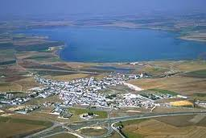
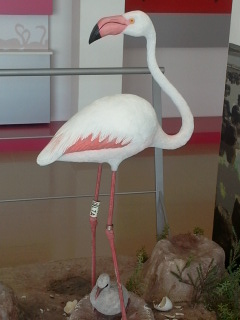
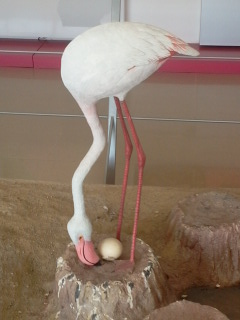
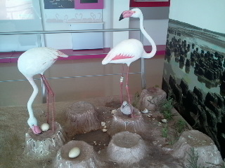
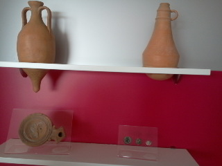
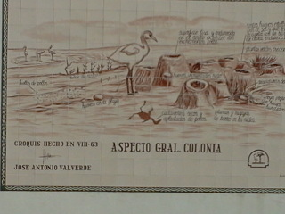
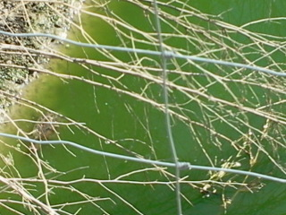
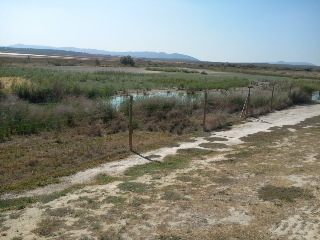
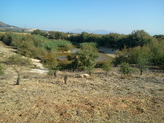
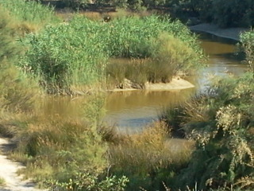
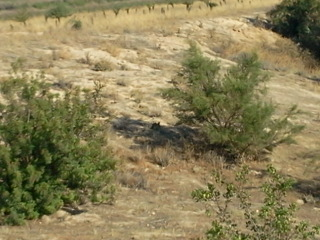
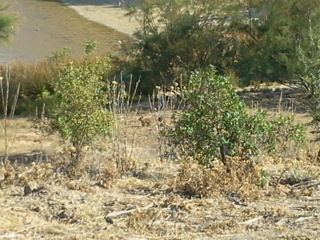
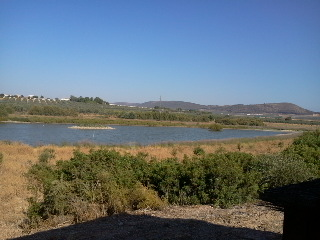
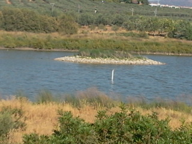
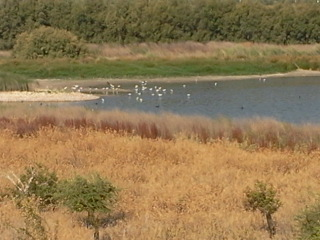
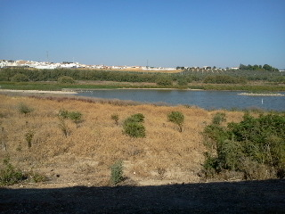
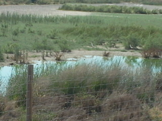
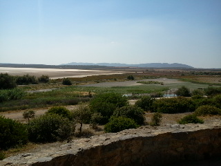
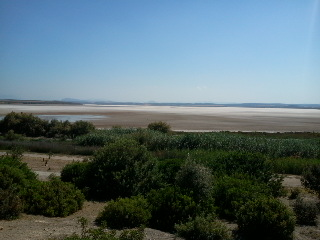
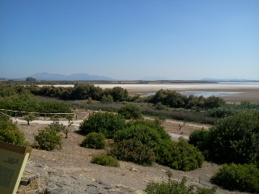
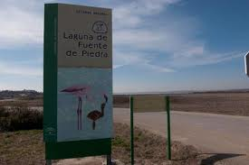
Andaluzsoy